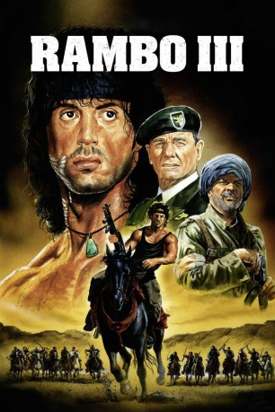
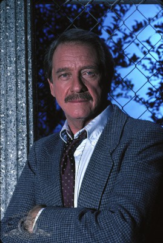
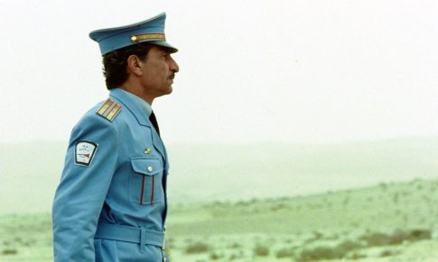
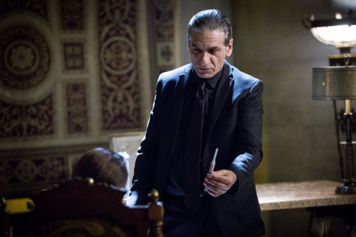
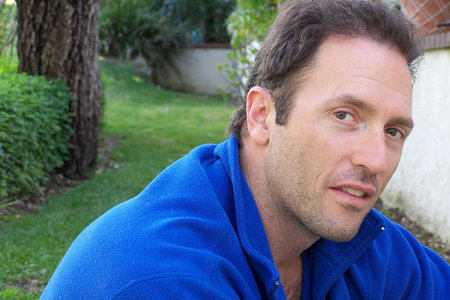

#322 Rambo 3
Alternativ: Rambo III (Originaltitel)
 
 IMDB-Wertung: 5.8 / 10
IMDB-Wertung: 5.8 / 10  Metascore: 36
Metascore: 36 
Colonel Trautman bittet seinen alten Freund John Rambo, der sich mittlerweile aus seinem tödlichen Geschäft zurückgezogen hat, um einen Gefallen: Er soll ihn bei einem Einsatz hinter sowjetischen Linien in Afganistan zur Seite stehen. Rambo lehnt zunächst ab, doch als Trautman gefangengenommen wird, eilt er natürlich zu dessen Rettung flugs hinter her…
Jahr: 1988
Dauer: 102 Minuten
FSK: Not Rated
Land: USA Studio: TriStar PicturesTonspuren: DTS-HD - ,
Untertitel: Deutsch, Englisch,
Auflösung: 1080p (1920×820) Größe: 11468 MB
Genre: Action, Abenteuer, Thriller, Krieg
Regisseur: Peter MacDonald
Drehbuch: David Morrell, Sylvester Stallone, Sheldon Lettich
Soundtrack: Jerry Goldsmith
Darsteller:
 Sylvester Stallone als Rambo
Sylvester Stallone als Rambo-  Richard Crenna als Col. Samuel Trautman
 Kurtwood Smith als Griggs
Kurtwood Smith als Griggs-  Sasson Gabai als Mousa
-  Alon Aboutboul als Nissem
 Iyad Hajjaj als Arabic Shop Assistant , uncredited
Iyad Hajjaj als Arabic Shop Assistant , uncredited-  Paul Dion Monte als Russian Gunner , uncredited
- Marc de Jonge als Colonel Zaysen
- Spiros Focás als Masoud
- Doudi Shoua als Hamid
- Randy Raney als Kourov
- Marcus Gilbert als Tomask
- Mahmoud Assadollahi als Rahim
 Joseph Shiloach als Khalid
Joseph Shiloach als Khalid- Harold Diamond als Stick Fighter
- Matti Seri als Gun Dealer
- Hany Said El Deen als Gun Dealer
- Shaby Ben-Aroya als Uri
- Marciano Shoshi als Afghan Girl
- Sadiq Tawfiq als Helicopter Person
- Julian Patrice als Helicopter Person
- Tal Kastoriano als Helicopter Person
- Benny Bruchim als Helicopter Person
- Tikva Aziz als Helicopter Person
- Milo Rafi als Helicopter Person
- Guy Nicholls als Soldier on Bridge , uncredited
Datei: X:\FSK18-Collections\Rambo\Rambo 3 (1988, FSKNot Rated, 1920x820).mkv seit 16.02.2015
Festplatte: FSK18
 Es gibt insgesamt 7 Filme in der Gruppe 'FSK18-Collections\Rambo'
Es gibt insgesamt 7 Filme in der Gruppe 'FSK18-Collections\Rambo'